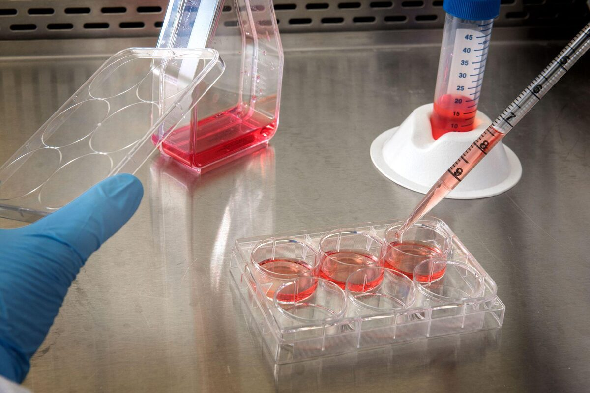

Doku – Hücre Kültür Uygulamaları
Memeli hücre ve dokularını laboratuvar ortamında, ideal yapay çevre şartlarını sağlayarak titizlikle büyütüyor ve yaşatıyoruz. Çalışmalarınızın ihtiyacına göre transfeksiyon ve transdüksiyon yöntemleriyle hücrelere yeni karakterler kazandırıyor ve projelerinize en uygun hücre soylarını sizin için üretiyoruz.